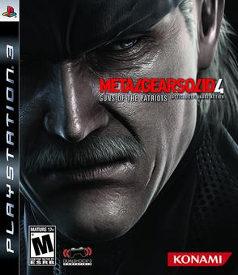

Metal Gear Solid 4: Guns of the Patriots[a] is a 2008 action-adventure stealth game developed by Kojima Productions and published by Konami for the PlayStation 3. It is the sixth Metal Gear game directed by Hideo Kojima. Set five years after the events of Metal Gear Solid 2: Sons of Liberty,[b] the story centers around a prematurely aged Solid Snake, now known as Old Snake, as he goes on one last mission to assassinate his nemesis Liquid Snake, who now inhabits the body of his former henchman Revolver Ocelot under the guise of Liquid Ocelot, before he takes control of the Sons of the Patriots, an A.I. system that controls the activities of PMCs worldwide.[1] The game was released on June 12, 2008.
Gameplay
In Guns of the Patriots, players assume the role of an aged Solid Snake (colloquially referred to as Old Snake), using stealth, close-quarters combat, and traditional Metal Gear combat. The overhead third-person view camera of earlier games has been replaced by a streamlined view and over-the-shoulder camera for aiming a weapon, with an optional first-person view like a first-person shooter at the toggle of a button.
Snake has a few gadgets to aid him in battle. The OctoCamo suit mimics the appearance and texture of any surface in a similar fashion to an octopus, decreasing the probability of Snake being noticed. Additionally, FaceCamo is made available to players after they defeat Laughing Octopus. FaceCamo can be worn by Solid Snake on his face and it can be set to either work in tandem with the Octocamo or instead mimic the face of other in-game characters. To get access to these unique FaceCamos, players have to complete certain in-game requirements first. When the FaceCamo is worn with OctoCamo, under ideal conditions, Snake's stealth quotient can reach 100%. The Solid Eye device highlights items and enemies and can operate in a night vision and a binocular mode. It also offers a baseline map, which indicates the location of nearby units.[7] The latter function is also performed by the Threat Ring, a visualization of Snake's senses that deforms based on nearby unit proximity and relays them to the player.
Synopsis
Setting
Guns of the Patriots is set within an alternate history timeline in which the Cold War continued into the 1990s, ending before the turn of the century. The events themselves take place in 2014, and form the final chapter in the storyline covering the character of Solid Snake, providing conclusions to the events that led up to Guns of the Patriots.
Plot
Five years after the Big Shell Incident[c], Snake is told by Otacon that he has only a year to live due to Werner syndrome-like symptoms. Snake meets Campbell, now working with the United Nations Security Council, who tells him that Revolver Ocelot, missing since the Big Shell Incident, possessed by the will of Liquid Snake[d], now under the guise of 'Liquid Ocelot', was located in the Middle East, and Snake is tasked to assassinate him. In a Middle-Eastern war zone occupied by one of Liquid's PMCs, Snake meets Drebin, an arms dealer who injects Snake with nanomachines to use the latest weaponry, and Meryl, now leader of Rat Patrol Team 01 and keeps a resentment against Campbell for being her biological father[e]. Snake reaches Liquid, but the latter transmits a signal that incapacitates those nearby with nanomachines. Snake spots Dr. Naomi Hunter, who assists him against the signal and then departs with Liquid.
Development
Kojima wished to implement a new style of gameplay which was set in a full-scale war zone. Kojima wanted to also retain the stealth elements from previous entries in the series, which made the team abandon the original "No Place to Hide" concept. The only announced war zone before release was the Middle East. Using several locations emphasized Kojima's original intention to present the world in full-scale armed conflict. Solid Snake was physically aged to portray to the player the games' overarching theme, SENSE, and to assign them to a character whose task was to pass moral values to future generations.[9] Kojima's initial ending for the Guns of the Patriots would entail Snake and Otacon turning themselves in for breaking the law, and subsequently convicted and executed. This was avoided after negative feedback from the development team. Snake's experience across the series made the creation of new enemies challenging and encouraged staff to create groups of non-human enemies to rival Snake.